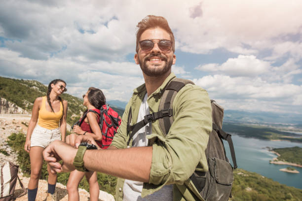
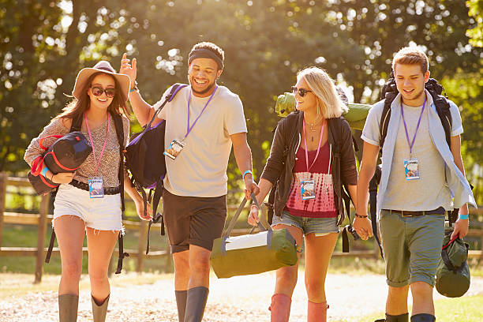
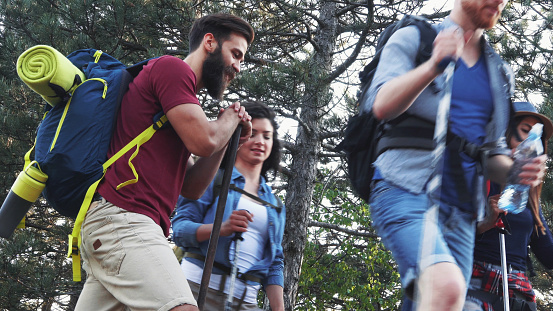

Our Successful Trips, Your Satisfaction is Our Priority.

Get ready to conquer the rapids! This adrenaline-pumping full-day excursion takes you through a scenic canyon with Class III-IV rapids that promise thrills and splashes at every turn. Your professional guide will ensure both safety and fun as you navigate through turbulent waves, crashing drops, and swirling whirlpools. Expect to break for a riverside picnic and soak up views of lush greenery and wildlife. Whether you're an experienced rafter or a brave first-timer, this trip delivers an unforgettable rush of excitement and natural beauty.

Perfect for families or those looking for a peaceful ride, this relaxing float trip takes you down calm waters under golden skies. The Sunset Float is ideal for photography, bird-watching, or just enjoying nature's quiet beauty with loved ones. Guides share local history and fun facts along the way while keeping the group safe and relaxed. No paddling experience is needed — just bring your smile, camera, and a sense of wonder.

Looking to unplug and immerse yourself in nature? This overnight rafting trip is the perfect blend of adventure and serenity. Spend your days paddling through Class II-III rapids and your evenings around a campfire with hearty meals and stargazing. All gear is provided, including tents and dry bags. Guides will handle the heavy lifting — from meal prep to navigation — so you can focus on bonding with your crew, relaxing, and soaking in the raw beauty of the wilderness.
Book Your Trip with Us
| Trip Name | Destination | Duration | Price | Difficulty | Meals | Equipment Provided |
|---|---|---|---|---|---|---|
| Abuja Sunset Float | Abuja Resort | Half Day | ₦10,000 | Easy | Snacks | Yes |
| Nature Camp Retreat | Kajuru Forest | 2 Days / 1 Night | ₦35,000 | Moderate | All meals | Yes |
| Lekki conservation center | Lekki Resort | Full Day | ₦50,000 | Moderate | All meals | Yes |
Book you trips: click here to book